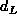

Data Structures and Algorithms
with Object-Oriented Design Patterns in Java
Data Structures and Algorithms
with Object-Oriented Design Patterns in Java
The findMin method locates the item with the smallest key
in a given priority queue
and the dequeueMin method removes it from the queue.
Since the smallest item in a heap is found at the root,
the findMin operation is easy to implement.
Program  shows how it can be done.
Clearly, the running time of the findMin operation is O(1).
shows how it can be done.
Clearly, the running time of the findMin operation is O(1).
Program: LeftistHeap class findMin method.
Since the smallest item in a heap is at the root,
the dequeueMin operation must delete the root node.
Since a leftist heap is a binary heap,
the root has at most two children.
In general when the root is deleted,
we are left with two non-empty leftist heaps.
Since we already have an efficient way to merge leftist heaps,
the solution is to simply merge the two children of the root
to obtain a single heap again!
Program shows how the dequeueMin operation
of the LeftistHeap class can be implemented.
Program: LeftistHeap class dequeueMin method.
The running time of Program is determined
by the time required to merge the two children of the root (line 17)
since the rest of the work in dequeueMin can be done in constant time.
Consider the running time to delete the root of a leftist heap T
with n internal nodes.
The running time to merge the left and right subtrees of T
where  and  are the null path lengths of the left and right
subtrees T, respectively.
In the worst case,
are the null path lengths of the left and right
subtrees T, respectively.
In the worst case,  and .
If we assume that
and .
If we assume that  ,
the running time for dequeueMin is
,
the running time for dequeueMin is  .
.
 Copyright © 1998 by Bruno R. Preiss, P.Eng. All rights reserved.
Copyright © 1998 by Bruno R. Preiss, P.Eng. All rights reserved.